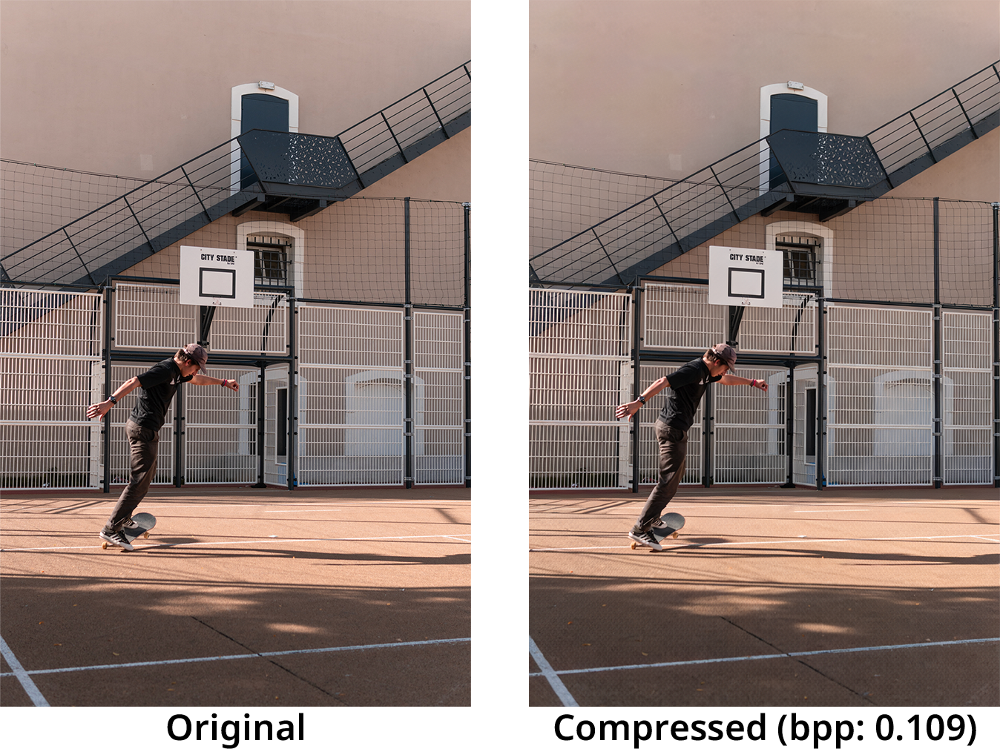
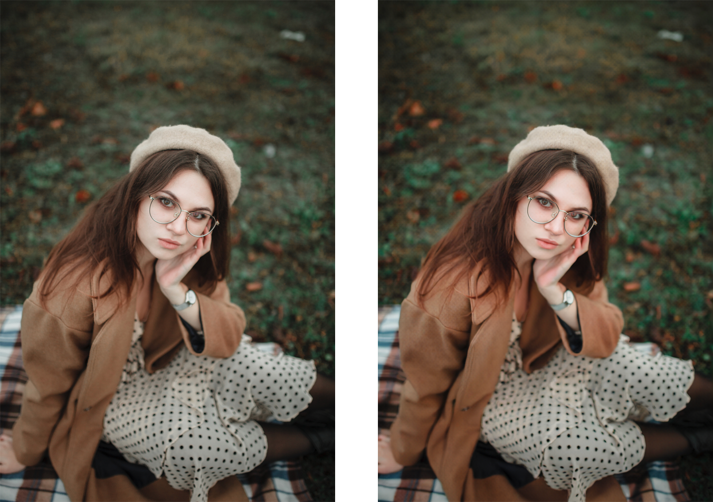

Qualitative examples



Recent advances in text-guided image compression have shown great potential to enhance the perceptual quality of reconstructed images. These methods, however, tend to have significantly degraded pixel-wise fidelity, limiting their practicality. To fill this gap, we develop a new text-guided image compression algorithm that achieves both high perceptual and pixel-wise fidelity. In particular, we propose a compression framework that leverages text information mainly by text-adaptive encoding and training with joint image-text loss. By doing so, we avoid decoding based on text-guided generative models---known for high generative diversity---and effectively utilize the semantic information of text at a global level. Experimental results on various datasets show that our method can achieve high pixel-level and perceptual quality, with either human- or machine-generated captions. In particular, our method outperforms all baselines in terms of LPIPS, with some room for even more improvements when we use more carefully generated captions.

@inproceedings{lee2024taco,
title={Neural Image Compression with Text-guided Encoding for both Pixel-level and Perceptual Fidelity},
author={Lee, Hagyeong and Kim, Minkyu and Kim, Jun-Hyuk and Kim, Seungeon and Oh, Dokwan and Lee, Jaeho},
booktitle={International Conference on Machine Learning},
year={2024}
}